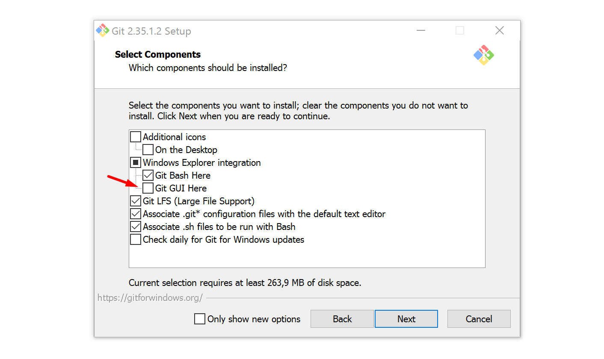
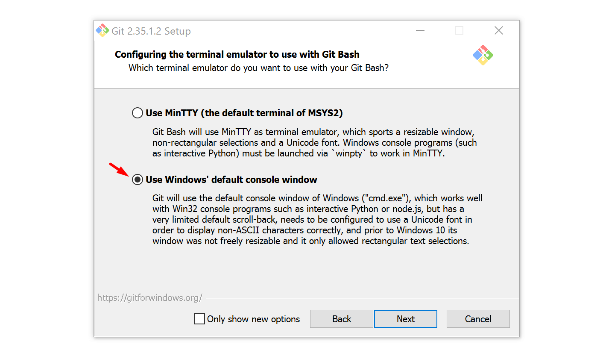
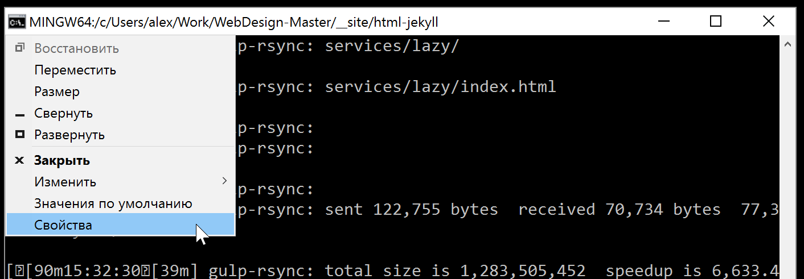
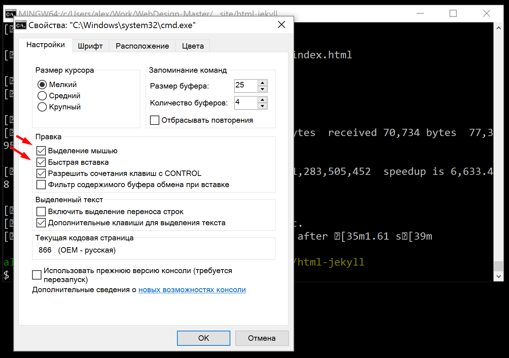
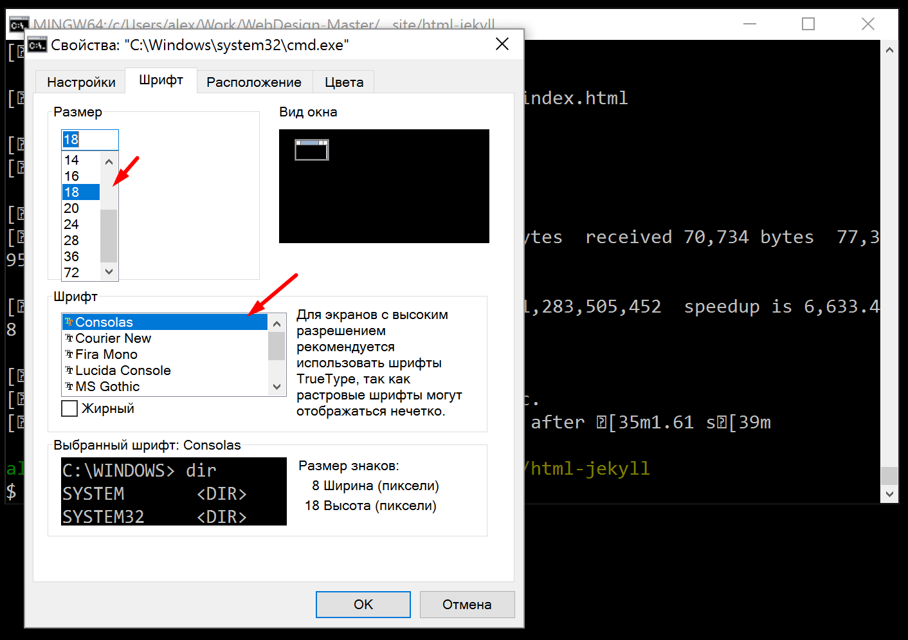
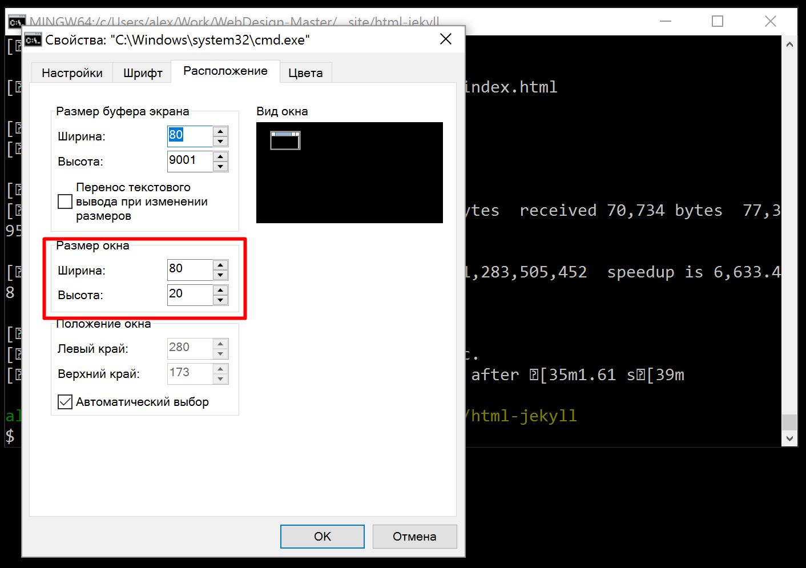
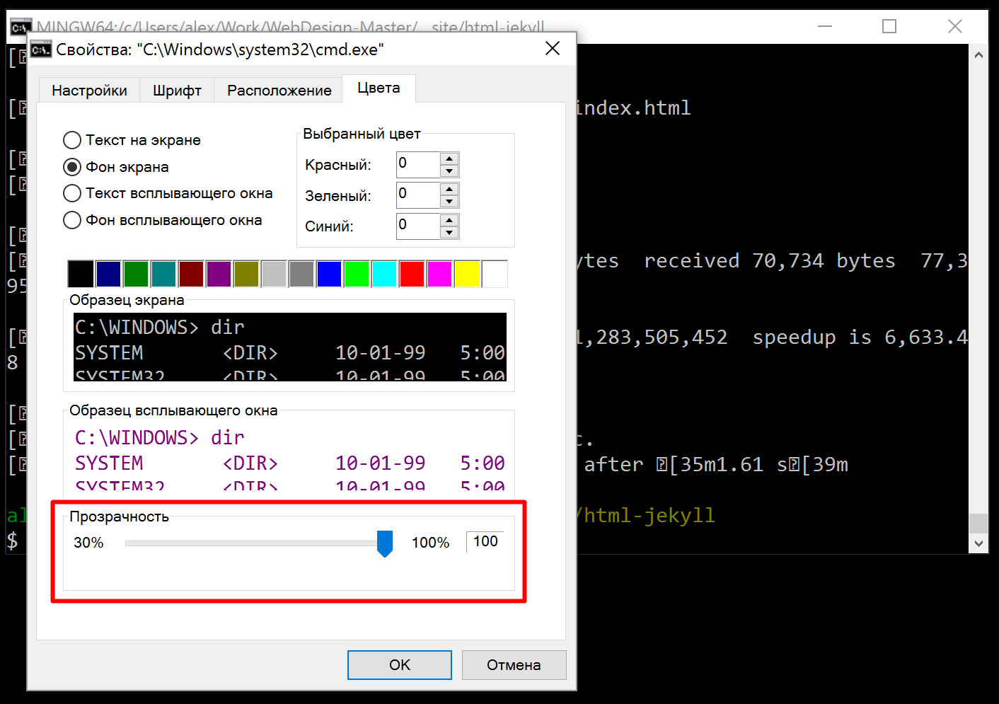
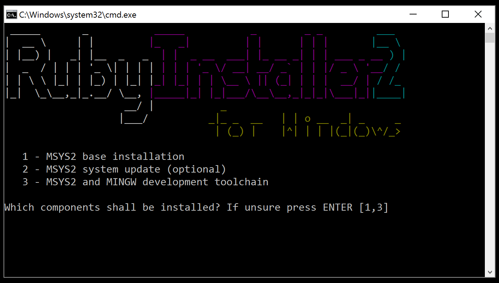

В этом руководстве мы рассмотрим установку и настройку окружения для веб-разработки без использования подсистемы WSL. Инстукции руководства протестированы во всех версиях Windows, включая последнюю. Рекомендации основаны на методичном тестировании окружения и софта в условиях реального рабочего процесса.
1. Установка окружения
Это базовый раздел руководства, в котором мы настроим окружение Node.js, установим и настроим Git (длинна пути, сохранение истории и т. д.).
1.1. Установка Node.js
Скачиваем LTS версию Node.js с официального сайта. В процессе установки никакие параметры установщика не меняем. Все опции - по умолчанию.
1.2. Установка Git
Скачиваем Git for Windows с официального сайта - 64 или 32 битную, в зависимости от разрядности вашей ОС. Если не знаете, что это, скачивайте 64 битную версию. Если будут проблемы, то 32-bit. В процессе установки оставляем все опции по умолчанию, кроме "Git GUI Here" и выбора дефолтной консоли:
 Отмена "Git GUI Here" необязательна, однако эта опция используется мной редко и является лишней в контекстном меню. Если данный пункт вам нужен, оставьте.
Выбор консоли Git является обязательным, так как нам нужна тесная интеграция именно с дефолтным терминалом Windows cmd. Рекомендую устанавливать данную опцию, если вы планируете работать с PHP, Python, Ruby и другими инструментами, которые интегрируются в командную оболочку Windows, а это 98% всех кейсов использования консоли. Чуть позже мы рассмотрим и настройку самого терминала, чтобы можно было приемлемо в нем работать.
В любой папке или на рабочем столе кликните правой кнопкой мыши и выберите "Git Bash Here". Давайте настроим длину пути и сохранение истории команд, отображаемую в терминале. Обычно я ограничиваю ее тремя уровнями. Выполняем команду:
nano ~/.bash_profileЗамем вставим в редактор nano, который откроется в терминале данные строки:
PROMPT_COMMAND='history -a'
PROMPT_DIRTRIM=3
Для того, чтобы вставить в терминале скопированный текст, достаточно кликнуть в окне правой кнопкой мыши. Текст вставится.
После чего можно нажать сочетание клавиш Ctrl+X, вводим Y и нажимаем Enter.
1.3. Настройка терминала
При настройке терминала Windows я выбираю следующие параметры:
Открыть настройки терминала Windows:
Настройка вставки правым кликом мыши в Windows cmd:
Настройка шрифта консоли:
Настройка размера окна терминала (по желанию):
Настройка непрозрачности окна терминала:
1.4. Установка модулей Node.js
В любой папке или на рабочем столе кликните правой кнопкой мыши и выберите "Git Bash Here". Давайте установим необходимые модули одной командой (ненужное удалить из строки):
npm i -g gulp rimraf npm-check-updates browser-sync esbuildСразу можно отключить создание файлов package-lock.json в npm:
npm config set package-lock falseА также задать Git Bash как терминал по умолчанию в настройках Visual Studio Code, добавив или заменив строку параметра terminal.integrated.defaultProfile.windows:
"terminal.integrated.defaultProfile.windows": "Git Bash", // Git Bash by DefaultС уроком по настройке Visual Studio Code можно ознакомиться здесь.
1.5. Установка Ruby и Jekyll (опционально)
Данный пункт необязетелен и предназначен для тех, кто использует в своей работе Jekyll или программирует на Ruby.
Скачиваем Ruby+Devkit 3.3.7-1 (x64) или 32 битную, в зависимости от разрядности вашей ОС. Если не знаете, что это, скачивайте 64 битную версию. Если будут проблемы, то 32-bit. Нужна именно версия с Devkit для сборки gem.
Внимание! Здесь важно установить именно версию Ruby+Devkit 3.3.7-1, а не последнюю, так как на данный момент она работает наиболее стабильно. Ее можно найти через поиск в браузере (Ctrl + F) на этой странице.
В процессе установки рекомендую выбрать папку для инсталляции не в корне диска C:\, как предлагает установщик по умолчанию, а в папке вашего пользователя, например: "C:\Users\alex\Ruby30-x64". Все опции при установке - по умолчанию, ничего не трогаем.
После установки откроется терминал Windows с настройкой MSYS2, в котором нам предложат сделать выбор. Просто жмем Enter, ничего не выбираем. В конце также нажимаем Enter:
Перезагружаем терминал. Теперь можно установить Jekyll и необходимые модули:
gem install bundler jekyll jekyll-paginate-v22. Интеграция rsync for Windows и настройка SSH
Данный пункт предназначен для тех, кто использует rsync для деплоя и бэкапа.
2.1. Установка rsync и 7z в Git Bash
Полностью скопируйте и выполните команду в терминале Git Bash:
mkdir -p ~/bin && curl -o ~/bin/rsync.exe https://raw.githubusercontent.com/webdesign-masteru/rsync-windows/main/rsync.exe && curl -o ~/bin/7z.exe https://raw.githubusercontent.com/webdesign-masteru/7zr/main/7zr.exeПосле выполнения команды rsync и 7z уже работают в Git Bash.
Внимание! Не все хостинги поддерживают rsync. Если у вас еще нет хостинга для сайтов или ваш сервер не поддерживает какой-то функционал, рекомендую SpaceWeb. Поддерживает все нужные технологии, в том числе и rsync.
2.2. Настройка SSH ключа для автоматической авторизации
Давайте настроим SSH и синхронизацию с сервером. Если настройка синхронизации вам не требуется, пропускайте данные инструкции. Кликом правой кнопки мыши на рабочем столе или в любой папке откройте Git Bash. Создадим папку "/.ssh" в директории пользователя, установим необходимые права и сгенерируем SSH-ключ:
rm -r ~/.ssh; mkdir -p ~/.ssh; chmod 700 ~/.ssh; cd ~/.ssh; ssh-keygen -f id_rsaСкопируем файл с ключом на ваш рабочий сервер (с вводом пароля, предварительно пишем "yes" на вопрос "Are you sure you want to continue connecting"):
scp -p id_rsa.pub user@site.ru:~Где user@site.ru - пользователь и хост вашего сервера.
Подключимся к вашему серверу по SSH (с вводом пароля):
ssh user@site.ruРазместим ключ на сервере (с перманентным удалением ~/.ssh) и завершим сессию:
rm -r ~/.ssh; mkdir -p ~/.ssh; chmod 700 ~/.ssh; cat id_rsa.pub >> ~/.ssh/authorized_keys; chmod 600 ~/.ssh/authorized_keys; rm -f ~/id_rsa.pub; logoutДобавим ssh-add:
eval `ssh-agent -s`; ssh-addОтлично! Теперь авторизация на сервере будет происходить автоматически, например при использовании rsync или других иснтрументов деплоя.
3. Бэкап с помощью rsync (бонус)
Вы можете настроить бэкап рабочей папки в другое место, например, в папку облака или в папку на внешнем диске с настройкой исключений. Мой пример скрипта .bat для бэкапа:
"%PROGRAMFILES%\Git\bin\sh.exe" -c "rsync -aP --delete --delete-excluded --exclude=Thumbs.db --exclude=.DS_Store --exclude=node_modules ~/Work/ /d/Work/"
pauseЗдесь мы выполняем rsync, добавляем в исключения Thumbs.db, .DS_Store, node_modules, package-lock.json - мусорные файлы и огромные массивы модулей, которые бекапить не нужно. Из папки Work, которая находится у меня в папке пользователя, файлы синхронизируются с директорией, которая находится на внешнем диске D. Папку назначения можно настроить на выгрузку в облако. Теперь достаточно запустить файл бэкапа .bat и начнется синхронизация.
Синхронизация происходит за считанные секунды и бэкапятся только те файлы, которые были изменены в процессе работы. После бэкапа мы ставим скрипт на паузу (строка 2), чтобы ознакомиться с файлами, которые были отправлены в бэкап. Вы можете создать свой файл с расширением .bat и настроить свой скрипт с нужными исключениями и параметрами источника и назначения по примеру, приведенному выше.